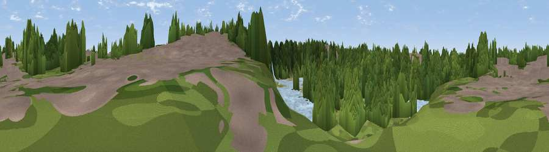

Chafford Gorges Visitor Centre
#45359 in England · top 87% of its area beats it · near GraysWhere it is
The exact computed spot (TQ 59924 79380). Click the marker for map links.
The view, rendered

A 360° render of this exact spot computed from the terrain model, tree cover and land cover — summer colours, afternoon light, calibrated against photographs of famous viewpoints. Real trees, hedges and buildings will differ in detail.
The panorama
Grey silhouette: terrain skyline in each direction (720 bearings, Earth curvature and refraction included). Dashed green: skyline with trees (+15 m) and buildings (+8 m) as obstacles. Blue strip: how far the ground is visible on each bearing.
Where the view opens
Wedge length = distance to the farthest visible ground on that bearing (vegetation-aware). Rings at 10, 25 and 50 km.
What fills the view
62% woodland · 15% built-up · 13% water · 9% grassland ·
Angular shares of the visible panorama (visual magnitude), not map area. Landscape diversity 0.49 (0–1 Shannon).
Key numbers
More beautiful places nearby
The staircase of upgrades: each row has a higher view potential than everything closer. Driving times are estimates from straight-line distance, calibrated against real road routing — check an actual route before setting out.
| Place | Direction | Drive | Score |
|---|---|---|---|
| Viewpoint near Grays | SSE · 0 km | ~2 min | 36.1 |
| Viewpoint near Aveley | WNW · 2 km | ~5 min | 41.1 |
| Viewpoint near North Ockendon | N · 4 km | ~10 min | 48.9 |
| Sandy Lane Pit | WNW · 4 km | ~10 min | 51.1 |
| Viewpoint near Ebbsfleet Valley | S · 7 km | ~14 min | 56.1 |
| Viewpoint near Horndon On The Hill | NE · 10 km | ~19 min | 58.8 |
| Viewpoint near Birling | SSE · 18 km | ~32 min | 65.2 |
| Viewpoint near Wrotham | S · 20 km | ~33 min | 66.6 |
51.49075, 0.30217 · source: osm viewpoint · position refined by local search. Computed location — check access rights before visiting.